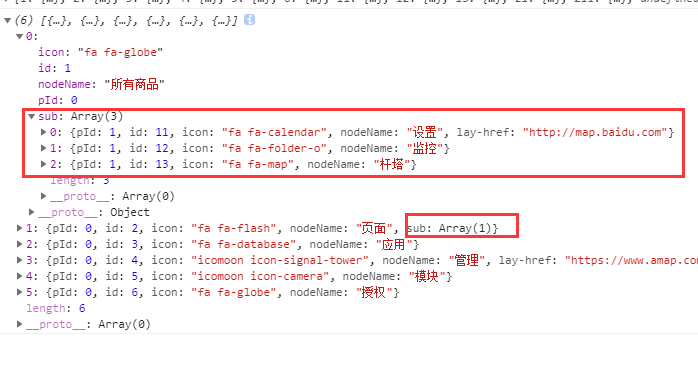

var nodes =[
{ id:1, pId:0, name:"父节点1 - 展开", open:true},
{ id:11, pId:1, name:"父节点11 - 折叠"},
{ id:111, pId:11, name:"叶子节点111"},
{ id:12, pId:1, name:"父节点12 - 折叠"},
{ id:121, pId:12, name:"叶子节点121"},
{ id:13, pId:1, name:"父节点13 - 没有子节点", isParent:true},
{ id:2, pId:0, name:"父节点2 - 折叠"},
{ id:21, pId:2, name:"父节点21 - 展开", open:true},
{ id:211, pId:21, name:"叶子节点211"},
{ id:22, pId:2, name:"父节点22 - 折叠"},
{ id:224, pId:22, name:"叶子节点224"},
{ id:23, pId:2, name:"父节点23 - 折叠"},
{ id:231, pId:23, name:"叶子节点231"},
{ id:234, pId:23, name:"叶子节点234"},
{ id:3, pId:0, name:"父节点3 - 没有子节点", isParent:true}
];
//简单节点树，转为复杂children节点树
simpleRevComplexData = function(simpleNodes){
var nodePoint = {};
for(var i in nodes){
nodePoint[nodes[i].id] = nodes[i];
}
var node = [];
for(var i in nodes){
if(nodes[i].pId in nodePoint){//if(nodePoint[nodes[i].pId])
(nodePoint[nodes[i].pId].children || (nodePoint[nodes[i].pId].children = [])).push(nodes[i]);
}else{//不在则是顶级节点
node.push(nodes[i]);
}
}
return node;
};
